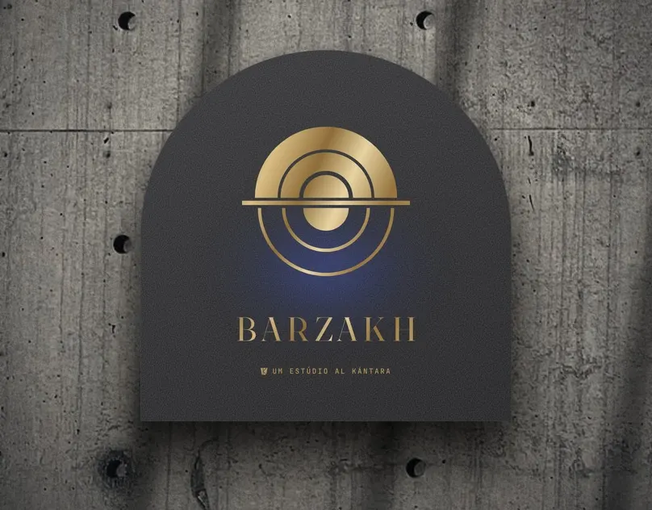
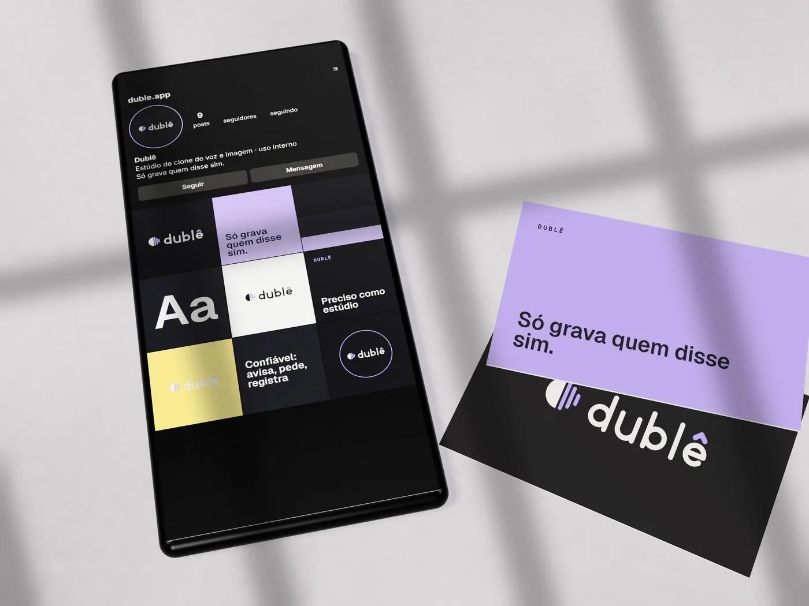
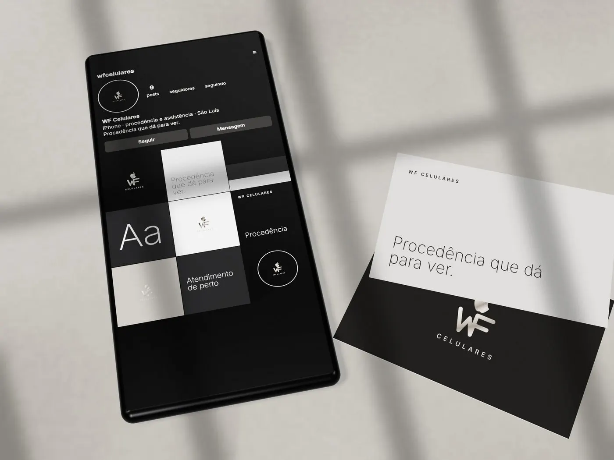
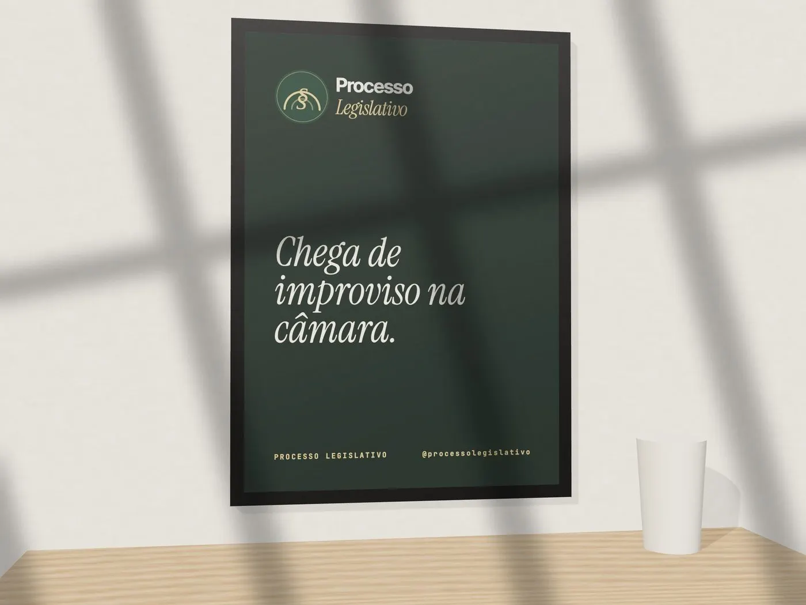
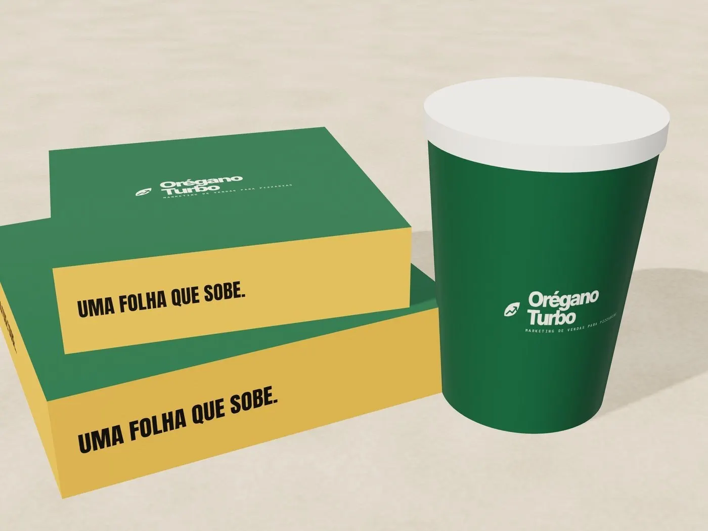

Barzakh · um estúdio Al KántaraBarzakh
Identidade do próprio estúdio: arco, monólito e ouro em hot stamping. Do símbolo à placa de fachada.
Ver projeto → Conversar
Conversar
CASES
Projetos no ar e produtos em uso. Sem número inflado: quando houver resultado medido e autorizado, ele entra aqui com a fonte.

Barzakh · um estúdio Al KántaraIdentidade do próprio estúdio: arco, monólito e ouro em hot stamping. Do símbolo à placa de fachada.
Ver projeto →
Al Kántara LabsApp de clonagem de voz e vídeo com o material do próprio dono. Marca, interface e aplicações.
Projeto entregue Barzakh · um estúdio Al Kántara
Barzakh · um estúdio Al KántaraIdentidade de uma operação que trabalha no ar, agora. Sistema de cor, cartões e peças.
Projeto entregue
Barzakh · um estúdio Al KántaraMarca de loja de celulares: procedência que dá para ver, do cartão à tela.
Projeto entregue
Barzakh · um estúdio Al KántaraCurso sobre o dia a dia da câmara, com identidade institucional em verde e dourado.
Projeto entregue
Al Kántara VenturesOperação de pizzaria do grupo: marca, embalagem, site e pedidos em sistema próprio.
Projeto entregueSite institucional de odontologia dentro das regras do conselho, pensado para quem chega pelo Instagram.
Ver no ar ↗Mini site da emissora com acesso direto ao conteúdo e ao contato.
Ver no ar ↗Mini site de catálogo com pedido pelo WhatsApp a um toque.
Ver no ar ↗Sistema único onde os pedidos chegam por voz e são distribuídos entre as equipes, com fila e resultado.
Uso internoCanal no YouTube com gravuras clássicas em cor de cinema e roteiro próprio.
Uso internoCanal sobre poder e estratégia com identidade de retrato em preto e dourado.
Uso interno